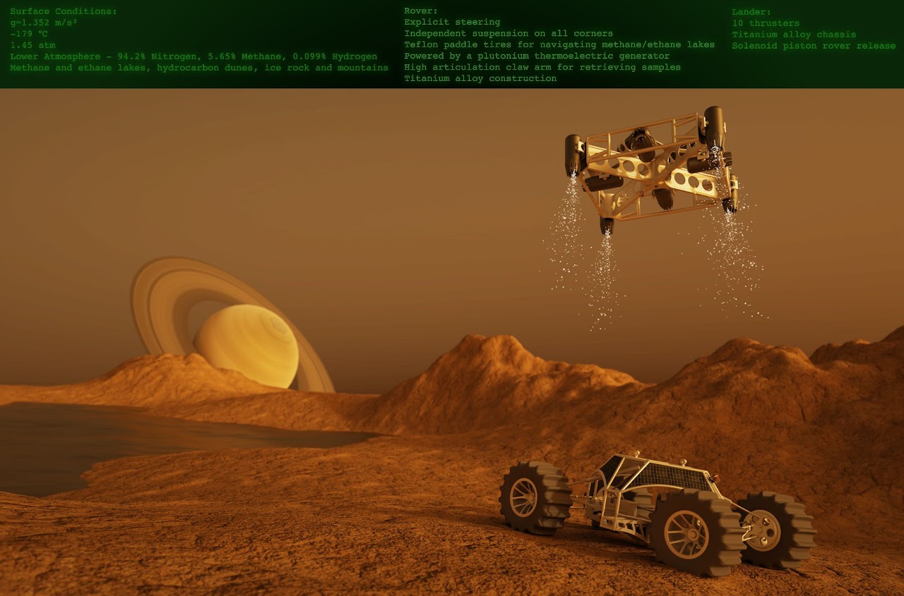
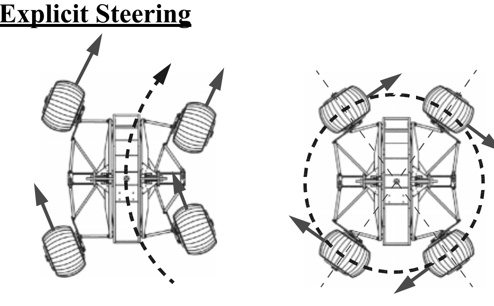

This project is for a rover that is capable of traversing Saturn's moon, Titan, and collecting rock samples. The final poster (below) was rendered in 3DS Max with the upper border and project details added in Photoshop. On the upper border, there are details about the conditions on Titan and the specification of the rover. Titanium was chosen for the lander and rover for its high strength-to-weight ratio and for its high performance in extremely cold temperatures (-179 °C). The choice of material for the tires was another difficult decision as the rover had to be very capable as parts of Titan's terrain are quite rocky, however there are also lakes of methane and ethane that the rover would need to traverse. Teflon (PTFE) was picked as it is soft enough to deform like a tire should while traversing difficult terrain, but also can withstand the harsh temperatures of Titan. The rover is powered by a plutonium generator and has a unique steering system ("Explicit Steering") that allows for better maneuverability.

Interactive 3D model of rover:
Interactive 3D model of lander:
Simulation video of rover simulated in Inventor dynamic simulation (terrain also modeled in Inventor)
- Note: Spring rates had to be set higher than ideal because of hardware limitations on the computer running the simulations

The rover uses an explicit steering system with two steering racks, one for the wheels on the left side and one for the right side wheels. This document from Benjamin Shamah at Carnegie Mellon University was used as a reference for the project.
In particular, the image on the left (from the aforementioned document) is a great illustration of how explicit steering works.
To simulate the lander mechanics, a simple block was used with "thrusters" (applied forces) on each side as well as some thrusters off the center of mass for rotation, similar to the positions of the thrusters in the final rendering. The first simulation done was a planar simulation where the block would take the position data (no matter where the block was initially placed in the starting square) and turn on/off the thrusters to orient itself roughly above a circle on the ground. This simulation is shown below
After this, the second simulation was done for only the vertical axis. Similarly to the planar simulation, the vertical simulation was intended to descend the lander (block) and slow down and stop just as contact is made with the ground. These two simulations combined accurately depict the lander's behavior. They were done separately to speed up simulation time as when I tried to add this part to the planar simulation, the whole thing ran very slowly. This simulation can be seen below.